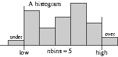

The SimPy Manual
| Authors: | Tony Vignaux <Vignaux@users.sourceforge.net>
Klaus Muller <Muller@users.sourceforge.net> Bob Helmbold |
|---|---|
| SimPy version: | 1.9 |
| SimPy Web-site: | http://simpy.sourceforge.net/ |
| SimPy wiki: | http://www.mcs.vuw.ac.nz/cgi-bin/wiki/SimPy |
| Python-Version: | 2.3+ |
| Revision: | 1.21 |
| Date: | 2008-03-12 |
- 1 Introduction
- 2 Simulation with SimPy
- 3 Processes
- 4 Resources
- 5 Levels
- 6 Stores
- 7 Random Number Generation
- 8 Recording Simulation Results
- 9 Other Links
- 10 Acknowledgments
- 11 Appendices
- 11.1 A0. Changes from the previous version of SimPy
- 11.2 A1. SimPy Error Messages
- 11.3 A2. SimPy Process States
- 11.4 A3. SimPlot, The SimPy plotting utility
- 11.5 A4. SimGUI, The SimPy Graphical User Interface
- 11.6 A5. SimulationTrace, the SimPy tracing utility
- 11.7 A6. SimulationStep, the SimPy event stepping utility
- 11.8 A7. SimulationRT, a real-time synchronizing utility
- 12 Glossary
This document describes SimPy version 1.9 [1] Changes from version 1.8 are listed in Appendix A0.
| [1] | The variable version, imported from SimPy.Simulation, contains the revision number and date of the current version. |
1 Introduction
SimPy is a Python-based discrete-event simulation system that models active components such as messages, customers, trucks, planes by parallel processes. It provides a number of tools for the simulation programmer including Processes to model active entities, three kinds of resource facilities (Resources, Levels, and Stores) and ways of recording results by using Monitors and Tallys.
The basic active elements of a SimPy model are process objects (i.e., objects of a Process class -- see Processes) [2]. These may be delayed for fixed or random times, queued at resource facilities, and may be interrupted by or interact in other ways with other processes and components. For example, Automobiles, modeled as process objects, may have to queue while waiting for a pump to become available in a model of a gas station. One obtaining a pump it takes some time to fill before releasing the pump.
| [2] | As a general practice and for brevity we will usually refer to both process objects and their classes as "processes." Thus, "process" may refer to a Process class or to a process object, depending on context. To avoid ambiguity or for added emphasis we often explicitly state whether a class or an object is intended. |
A SimPy script contains the declaration of one or more Process classes and the creation of process objects from them. Each process object [3] executes its Process Execution Method (referred to later as a PEM), a method that determines its actions. Each PEM runs in parallel with (and may interact with) the PEMs of other process objects.
| [3] | We will often refer to process objects as "entities". This term is frequently used in the simulation literature. Here, though, we restrict it to process objects and it will not be used for any other elements in the simulation. |
There are three types of resource facilities (Resources, Levels, and Stores). Each type models a congestion point where process objects may have to queue while waiting to acquire or, in some cases to deposit, a resource.
Resources have several resource units, each of which may be used by process objects. Extending the example above, the gas station might be modeled as a resource with its pumps as resource units. On receiving a request for a pump from a car, the gas station resource automatically queues waiting cars until one becomes available. The pump resource unit is held by the car until it is released for possible use by another car.
Levels model the supply and consumption of a homogeneous undifferentiated "material." The Level at any time holds an amount of material that is fully described by a scalar (real or integer). This can be increased or decreased by process objects. For example, a gas (petrol) station stores gas in large storage tanks. The tanks can be increased by Tanker deliveries and reduced by cars refuelling. A car need not return the gas to the Level in contrast to the requirement for Resource units.
Stores model the production and consumption of individual items. A store hold a list of items. Process objects can insert or remove items from the list. For example, surgical procedures (treated as process objects) require specific lists of personnel and equipment that may be treated as the items in a Store facility such as a clinic or hospital. The items held in a Store can be of any Python type. In particular they can be process objects, and this may be exploited to facilitate modeling Master/Slave relationships.
In addition to the number of free units or quantities, resource facilities all hold queues of waiting process objects which are operated automatically by SimPy. They also operate a reneging mechanism so that a process object can abandon the wait.
Monitors and Tallys are used to compile statistics as a function of time on variables such as waiting times and queue lengths. These statistics consist of simple averages and variances, time-weighted averages, or histograms. They can be gathered on the queues associated with Resources, Levels and Stores. For example we may collect data on the average number of cars waiting at a gas station and the distribution of their waiting times. Tallys update the current statistics as the simulation progresses, but cannot preserve complete time-series records. Monitors can preserve complete time-series records that may later be used for more advanced post-simulation analyses.
Before attempting to use SimPy, you should be able to write Python code. In particular, you should be able to define and use classes and their objects. Python is free and usable on most platforms. We do not expound it here. You can find out more about it and download it from the Python web-site (http://www.Python.org). SimPy requires Python 2.3 or later.
[Return to Top ]
2 Simulation with SimPy
To use the SimPy simulation system you must import its Simulation module (or one of the alternatives):
from SimPy.Simulation import *
All discrete-event simulation programs automatically maintain the current simulation time in a software clock. This cannot be changed by the user directly. In SimPy the current clock value is returned by the now() function.
At the start of the simulation the software clock is set to 0.0. While the simulation program runs, simulation time steps forward from one event to the next. An event occurs whenever the state of the simulated system changes. For example, an event might be the arrival or departure of a car from the gas station.
The following statement initializes global simulation variables and sets the software clock to zero. It must appear in the script before any SimPy process objects are activated.
initialize( )
This is followed by SimPy statements creating and activating process objects. Activation of process objects adds events to the simulation schedule. Execution of the simulation itself starts with the following statement:
simulate(until=endtime)
The simulation starts, and SimPy seeks and executes the first scheduled event. Having executed that event, the simulation seeks and executes the next event, and so on.
Typically a simulation is terminated when endtime is reached but it can be stopped at any time by the command:
stopSimulation( )
now( ) will then equal the time when this was called. The simulation will also stop if there are no more events to execute (so now() equals the time the last scheduled event occurred)
After the simulation has stopped, further statements can be executed. now() will retain the time of stopping and data held in Monitors will be available for display or further analysis.
The following fragment shows only the main block in a simulation program. (Complete, runnable examples are shown in Example 1 and Example 2). Here Message is a (previously defined) Process class and m is defined as an object of that class, that is, a particular message. Activating m has the effect of scheduling at least one event by starting the PEM of m (here called go). The simulate(until=1000.0) statement starts the simulation itself, which immediately jumps to the first scheduled event. It will continue until it runs out of events to execute or the simulation time reaches 1000.0. When the simulation stops the (previously written) Report function is called to display the results:
initialize() m = Message() activate(m,m.go(),at=0.0) simulate(until=1000.0) Report() # report results when the simulation finishes
2.1 Alternative SimPy simulation libraries
In addition to SimPy.Simulation, SimPy provides three alternative simulation libraries which have the basic SimPy.Simulation capabilities, plus additional facilities:
- SimPy.SimulationTrace for program tracing: With from SimPy.SimulationTrace import *, any SimPy program automatically generates detailed event-by-event tracing output. This makes the library ideal for program development/testing and for teaching SimPy.
- SimPy.SimulationRT for real time synchronization: from SimPy.SimulationRT import * facilitates synchronizing simulation time and real (wall-clock) time. This capability can be used to implement, e.g., interactive game applications or to demonstrate a model's execution in real time.
- SimPy.SimulationStep for event-stepping through a simulation: The import from SimPy.SimulationStep import * provides an API for stepping through a simulation event by event. This can assist with debugging models, interacting with them on an event-by-event basis, getting event-by-event output from a model (e.g. for plotting purposes), etc.
[Return to Top ]
3 Processes
The active objects for discrete-event simulation in SimPy are process objects -- instances of some class that inherits from SimPy's Process class.
For example, if we are simulating a computing network we might model each message as an object of the class Message. When message objects arrive at the computing network they make transitions between nodes, wait for service at each one, are served for some time, and eventually leave the system. The Message class specifies all the actions of each message in its Process Execution Method (PEM). Individual message objects are created as the simulation runs, and their evolutions are directed by the Message class's PEM.
3.1 Defining a process
Each Process class inherits from SimPy's Process class. For example the header of the definition of a new Message Process class would be:
class Message(Process):
At least one Process Execution Method (PEM) must be defined in each Process class [4]. A PEM may have arguments in addition to the required self argument that all methods must have. Naturally, other methods and, in particular, an __init__ method, may be defined.
| [4] | More than one can be defined but only one can be executed by any process object. |
A Process Execution Method (PEM) defines the actions that are performed by its process objects. Each PEM must contain at least one of the yield statements, described later. This makes it a Python generator function so that it has resumable execution -- it can be restarted again after the yield statement without losing its current state. A PEM may have any name of your choice. For example it may be called execute( ) or run( ).
"The yield statements are simulation commands which affect an ongoing lifecycle of Process objects. These statements control the execution and synchronization of multiple processes. They can delay a process, put it to sleep, request a shared resource or provide a resource. They can add new events on the simulation event schedule, cancel existing ones, or cause processes to wait for a state change."
For example, here is a the Process Execution Method, go(self), for the Message class. Upon activation it prints out the current time, the message object's identification number and the word "Starting". After a simulated delay of 100.0 time units (in the yield hold, ... statement) it announces that this message object has "Arrived":
def go(self): print now(), self.i, 'Starting' yield hold,self,100.0 print now(), self.i, 'Arrived'A process object's PEM starts execution when the object is activated, provided the simulate(until= ...) statement has been executed.
__init__(self, ...), where ... indicates method arguments. This method initializes the process object, setting values for some or all of its attributes. As for any sub-class in Python, the first line of this method must call the Process class's __init__( ) method in the form:
Process.__init__(self)
You can then use additional commands to initialize attributes of the Process class's objects. You can also override the standard name attribute of the object.
The __init__( ) method is always called whenever you create a new process object. If you do not wish to provide for any attributes other than a name, the __init__ method may be dispensed with. An example of an __init__( ) method is shown in the example below.
3.2 Creating a process object
An entity (process object) is created in the usual Python manner by calling the Class. Process classes have a single argument, name which can be specified if no __init__ method is defined. It defaults to 'a_process'. It can be over-ridden if an __init__ method is defined.
For example to create a new Message object with a name Message23:
m = Message(name="Message23")
Example 1: This is is a complete, runnable, SimPy script. We declare a Message class and define an __init__( ) method and a PEM called go( ). The __init__( ) method provide an instance variables of an identification number and message length. We do not actually use the len attribute in this example.
Two messages, p1 and p2 are created. p1 and p2 are activated to start at simulation times 0.0 and 6.0, respectively. Nothing happens until the simulate(until=200) statement. When both messages have finished (at time 6.0+100.0=106.0) there will be no more events so the simulation will stop at that time:
from SimPy.Simulation import * class Message(Process): """ a simple Process """ def __init__(self,i,len): Process.__init__(self,name="Message"+str(i)) self.i = i self.len = len def go(self): print now( ), self.i, "Starting" yield hold,self,100.0 print now( ), self.i, "Arrived" initialize( ) p1 = Message(1,203) # new message activate(p1,p1.go( )) # activate it p2 = Message(2,33) activate(p2,p2.go( ),at=6.0) simulate(until=200) print 'Current time is ',now( ) # will print 106.0Running this program gives the following output:
0 1 Starting 6.0 2 Starting 100.0 1 Arrived 106.0 2 Arrived Current time is 106.0
3.3 Elapsing time in a Process
A PEM uses the yield hold command to temporarily delay a process object's operations.
yield hold
yield hold,self,t
Causes the process object to delay t time units [5]. After the delay, it continues with the next statement in its PEM. During the hold the object's operations are suspended.
| [5] | unless it is further delayed by being interrupted. This is used to model any elapsed time an entity might be involved in. For example while it is passively being provided with service. |
Example 2: In this example the Process Execution Method, buy, has an extra argument, budget:
from SimPy.Simulation import * class Customer(Process): def buy(self,budget=0): print 'Here I am at the shops ',self.name t = 5.0 for i in range(4): yield hold,self,t # executed 4 times at intervals of t time units print 'I just bought something ',self.name budget -= 10.00 print 'All I have left is ', budget,\ ' I am going home ',self.name, initialize() # create a customer named "Evelyn", C = Customer(name='Evelyn') # and activate her with a budget of 100 activate(C,C.buy(budget=100),at=10.0) simulate(until=100.0)
3.4 Starting and stopping SimPy Process Objects
A process object is "passive" when first created, i.e., it has no scheduled events. It must be activated to start its Process Execution Method. To activate an instance of a Process class you can use either the activate function or the start method of the Process. (see the Glossary for an explanation of the modified Backus-Naur Form (BNF) notation used).
activate
activate(p, p.pemname([args])[,{at=now()|delay=0}][,prior=False])
activates process object p, provides its Process Execution Method p.pemname( ) with arguments args and possibly assigns values to the other optional parameters. The default is to activate at the current time (at=now( )) with no delay (delay=0.0) and prior set to False. You may assign other values to at, delay, and prior.
Example: to activate a process object, cust with name cust001 at time 10.0 using a PEM called lifetime:
activate(cust,cust.lifetime(name='cust001'),at=10.0)
However, delay overrides at, in the sense that when a delay=period clause is included, then activation occurs at now( ) or now( )+period (whichever is larger), irrespective of what value of t is assigned in the at=t clause. This is true even when the value of period in the delay clause is zero, or even negative. So it is better and clearer to choose one (or neither) of at=t and delay=period, but not both.
If you set prior=True, then process object p will be activated before any others that happen to be scheduled for activation at the same time. So, if several process objects are scheduled for activation at the same time and all have prior=True, then the last one scheduled will actually be the first to be activated, the next-to-last of those scheduled, the second to be activated, and so forth.
Retroactive activations that attempt to activate a process object before the current simulation time terminate the simulation with an error report.
start
An alternative to activate() function is the start method. There are a number of ways of using it:
p.start(p.pemname([args])[,{at=now()|delay=0}][,prior=False])
is an alternative to the activate statement. p is a Process object. The generator function, pemname, can have any identifier (such as run, lifecycle, etc). It can have parameters.
For example, to activate the process object cust using the PEM with identifier, lifetime at time 10.0 we would use:
cust.start(cust.lifetime(name='cust001'),at=10.0)
p.start([p.ACTIONS()] [,{at=now()|delay=0}][,prior=False])
if p is a Process object and the generator function is given the standard identifier, ACTIONS. ACTIONS, is recognized as a Process Execution Method. It may not have parameters. The call p.ACTIONS() is optional.
For example, to activate the process object cust with the standard PEM identifier ACTIONS at time 10.0, the following are equivalent (and the second version is more convenient):
cust.start(cust.ACTIONS(), at=10.0) cust.start(at=10.0)
An anonymous instance of Process class PR can be created and activated in one command using start with the standard PEM identifier, ACTIONS.
PR.([args]).start( [,{at=now()|delay=0}][,prior=False])
Here, PR is the identifier for the Process class and not for a Process object as was p, in the statements above. The generator method ACTIONS may not have parameters.
For example, if Customer is a SimPy Process class we can create and activate an anonymous instance at time 10.0:
Customer(name='cust001').start(at=10.0)
You can use the passivate, reactivate, or cancel commands to control Process objects.
passivate
yield passivate,self
suspends the process object itself. It becomes "passive". To get it going again another process must reactivate it.
reactivate
reactivate(p[,{at=now()|delay=0}][,prior=False])
reactivates a passive process object, p. It becomes "active". The optional parameters work as for activate. A process object cannot reactivate itself. To temporarily suspend itself it must use yield hold,self,t instead.
cancel
self.cancel(p)
deletes all scheduled future events for process object p. A process cannot cancel itself. If that is required, use yield passivate,self instead. Only "active" process objects can be canceled.
A process object is "terminated" after all statements in its process execution method have been completed. If the object is still referenced by a variable, it becomes just a data container. This can be useful for extracting information. Otherwise, it is automatically destroyed.
Even activated process objects will not start operating until the simulate(until=endtime) statement is executed. This starts the simulation going and it will continue until time endtime (unless it runs out of events to execute or the command stopSimulation( ) is executed).
Example 3 This simulates a firework with a time fuse. We have put in a few extra yield hold commands for added suspense.
from SimPy.Simulation import *
class Firework(Process):
def execute(self):
print now(), ' firework launched'
yield hold,self, 10.0 # wait 10.0 time units
for i in range(10):
yield hold,self,1.0
print now(), ' tick'
yield hold,self,10.0 # wait another 10.0 time units
print now(), ' Boom!!'
initialize()
f = Firework() # create a Firework object, and
# activate it (with some default parameters)
activate(f,f.execute(),at=0.0)
simulate(until=100)
Here is the output. No formatting was attempted so it looks a bit ragged:
0.0 firework launched 11.0 tick 12.0 tick 13.0 tick 14.0 tick 15.0 tick 16.0 tick 17.0 tick 18.0 tick 19.0 tick 20.0 tick 30.0 Boom!!
A source fragment
One useful program pattern is the source. This is a process object with a Process Execution Method (PEM) that sequentially generates and activates other process objects -- it is a source of other process objects. Random arrivals can be modeled using random intervals between activations.
Example 4: A source. Here a source creates and activates a series of customers who arrive at regular intervals of 10.0 units of time. This continues until the simulation time exceeds the specified finishTime of 33.0. (Of course, to model customers with random inter-arrival times the yield hold statement would use a random variate, such as expovariate( ), instead of the constant 10.0 inter-arrival time used here.) The following example assumes that the Customer class has previously been defined with a PEM called run that does not require any arguments:
class Source(Process):
def execute(self, finish):
while now() < finish:
c = Customer() # create a new customer object, and
# activate it (using default parameters)
activate(c,c.run())
print now(), ' customer'
yield hold,self,10.0
initialize()
g = Source() # create the Source object, g,
# and activate it
activate(g,g.execute(finish=33.0),at=0.0)
simulate(until=100)
3.5 Asynchronous interruptions
An active process object can be interrupted by another but cannot interrupt itself.
interrupt
self.interrupt(victim)
The interrupter process object uses its interrupt method to interrupt the victim process object. The interrupt is just a signal. After this statement, the interrupter process object continues its PEM.
For the interrupt to have an immediate effect, the victim process object must be active -- that is it must have an event scheduled for it (that is, it is "executing" a yield hold ). If the victim is not active (that is, it is either passive or terminated) the interrupt has no effect. For example, process objects queuing for resource facilities cannot be interrupted because they are passive during their queuing phase.
If interrupted, the victim returns from its yield hold statement prematurely. It must then check to see if it has been interrupted by calling:
interrupted
self.interrupted( )
which returns True if it has been interrupted. The victim can then either continue in the current activity or switch to an alternative, making sure it tidies up the current state, such as releasing any resources it owns.
interruptCause
self.interruptCause
when the victim has been interrupted, self.interruptCause is a reference to the interrupter object.
interruptLeft
self.interruptLeft
gives the time remaining in the interrupted yield hold. The interruption is reset (that is, "turned off") at the victim's next call to a yield hold.
interruptReset
self.interruptReset( )
will reset the interruption.
It may be helpful to think of an interruption signal as instructing the victim to determine whether it should interrupt itself. If the victim determines that it should interrupt itself, it then becomes responsible for making any necessary readjustments -- not only to itself but also to any other simulation components that are affected. (The victim must take responsibility for these adjustments, because it is the only simulation component that "knows" such details as whether or not it is interrupting itself, when, and why.)
Example 5. A simulation with interrupts. A bus is subject to breakdowns that are modeled as interrupts caused by a Breakdown process. Notice that the yield hold,self,tripleft statement may be interrupted, so if the self.interrupted() test returns True a reaction to it is required. Here, in addition to delaying the bus for repairs, the reaction includes scheduling the next breakdown. In this example the Bus Process class does not require an __init__() method:
from SimPy.Simulation import *
class Bus(Process):
def operate(self,repairduration,triplength): # PEM
tripleft = triplength
# "tripleft" is the driving time to finish trip
# if there are no further breakdowns
while tripleft > 0:
yield hold,self,tripleft # try to finish the trip
# if a breakdown intervenes
if self.interrupted():
print self.interruptCause.name, 'at %s' %now()
tripleft=self.interruptLeft
# update driving time to finish
# the trip if no more breakdowns
self.interruptReset() # end self-interrupted state
# update next breakdown time
reactivate(br,delay=repairduration)
# impose delay for repairs on self
yield hold,self,repairduration
print 'Bus repaired at %s' %now()
else: # no breakdowns intervened, so bus finished trip
break
print 'Bus has arrived at %s' %now()
class Breakdown(Process):
def __init__(self,myBus):
Process.__init__(self,name='Breakdown '+myBus.name)
self.bus=myBus
def breakBus(self,interval): # Process Execution Method
while True:
yield hold,self,interval # driving time between breakdowns
if self.bus.terminated(): break
# signal "self.bus" to break itself down
self.interrupt(self.bus)
initialize()
b=Bus('Bus') # create a Bus object "b" called "Bus"
activate(b,b.operate(repairduration=20,triplength=1000))
# create a Breakdown object "br" for bus "b", and
br=Breakdown(b)
# activate it with driving time between
# breakdowns equal to 300
activate(br,br.breakBus(300))
simulate(until=4000)
print 'SimPy: No more events at time %s' %now()
The output from this example:
Breakdown Bus at 300 Bus repaired at 320 Breakdown Bus at 620 Bus repaired at 640 Breakdown Bus at 940 Bus repaired at 960 Bus has arrived at 1060 SimPy: No more events at time 1260
Where interrupts can occur, the victim of interrupts must test for interrupt occurrence after every appropriate yield hold and react appropriately to it. A victim holding a resource facility when it gets interrupted continues to hold it.
3.6 Advanced synchronization/scheduling capabilities
The preceding scheduling constructs all depend on specified time values. That is, they delay processes for a specific time, or use given time parameters when reactivating them. For a wide range of applications this is all that is needed.
However, some applications either require or can profit from an ability to activate processes that must wait for other processes to complete. For example, models of real-time systems or operating systems often use this kind of approach. Event Signalling is particularly helpful in such situations. Furthermore, some applications need to activate processes when certain conditions occur, even though when (or if) they will occur may be unknown. SimPy has a general wait until to support clean implementation of this approach.
This section describes how SimPy provides event Signalling and wait until capabilities.
Creating and Signalling SimEvents
As mentioned in the Introduction, for ease of expression when no confusion can arise we often refer to both process objects and their classes as "processes", and mention their object or class status only for added clarity or emphasis. Analogously, we will refer to objects of SimPy's SimEvent class as "SimEvents" [6] (or, if no confusion can arise, simply as "events"). However, we sometimes mention their object or class character for clarity or emphasis.
| [6] | The name SimEvent was chosen because "event" is already used in Python's standard library. See Python Library Reference section 7.5 threading -- Higher-level threading interface, specifically subsection 7.5.5. |
SimEvent objects must be created before they can be fired by a signal. You create the SimEvent object, sE, from SimPy's SimEvent class by a statement like the following:
sE = SimEvent(name='I just had a great new idea!')
A SimEvent's name attribute defaults to a_SimEvent unless you provide your own, as shown here. Its occurred attribute, sE.occurred, is a Boolean that defaults to False. It indicates whether the event sE has occurred.
You program a SimEvent to "occur" or "fire" by "signaling" it like this:
sE.signal(<payload parameter>)
This "signal" is "received" by all processes that are either "waiting" or "queueing" for this event to occur. What happens when they receive this signal is explained in the next section. The <payload parameter> is optional -- it defaults to None. It can be of any Python type. Any process can retrieve it from the event's signalparam attribute, for example by:
message = sE.signalparam
Waiting or Queueing for SimEvents
You can program a process either to "wait" or to "queue" for the occurrence of SimEvents. The difference is that all processes "waiting" for some event are reactivated as soon as it occurs. For example, all firemen go into action when the alarm sounds. In contrast, only the first process in the "queue" for some event is reactivated when it occurs. That is, the "queue" is FIFO [7]. An example might be royal succession -- when the present ruler dies: "The king is dead. Long live the (new) king!" (And all others in the line of succession move up one step.)
| [7] | (1, 2, 3) "First-in-First-Out" or FCFS, "First-Come-First-Served" |
You program a process to wait for SimEvents by including in its PEM:
yield waitevent
yield waitevent,self,<events part>
where <events part> can be either:
- one SimEvent object, e.g. myEvent, or
- a tuple of SimEvent objects, e.g. (myEvent,myOtherEvent,TimeOut), or
- a list of SimEvent objects, e.g. [myEvent,myOtherEvent,TimeOut]
If none of the events in the <events part> have occurred, the process is passivated and joined to the list of processes waiting for some event in <events part> to occur (or to recur).
On the other hand, when any of the events in the <events part> occur, then all of the processes "waiting" for those particular events are reactivated at the current time. Then the occurred flag of those particular events is reset to False. Resetting their occurred flag prevents the waiting processes from being constantly reactivated. (For instance, we do not want firemen to keep responding to any such "false alarms.") For example, suppose the <events part> lists events a, b and c in that order. If events a and c occur, then all of the processes waiting for event a are reactivated. So are all processes waiting for event c but not a. Then the occurred flags of events a and c are toggled to False. No direct changes are made to event b or to any processes waiting for it to occur.
You program a process to "queue" for events by including in its PEM:
yield queueevent
yield queueevent,self,<events part>
where the <events part> is as described above.
If none of the events in the <events part> has occurred, the process is passivated and appended to the FIFO queue of processes queuing for some event in <events part> to occur (or recur).
But when any of the events in <events part> occur, the process at the head of the "queue" is taken off the queue and reactivated at the current time. Then the occurred flag of those events that occurred is reset to False as in the "waiting" case.
Finding Which Processes Are Waiting/Queueing for an Event, and Which Events Fired
SimPy automatically keeps current lists of what processes are "waiting" or "queueing" for SimEvents. They are kept in the waits and queues attributes of the SimEvent object and can be read by commands like the following:
TheProcessesWaitingFor_myEvent = myEvent.waits TheProcessesQueuedFor_myEvent = myEvent.queues
However, you should not attempt to change these attributes yourself.
Whenever myEvent occurs, i.e., whenever a myEvent.signal(...) statement is executed, SimPy does the following:
- If there are any processes waiting or queued for that event, it reactivates them as described in the preceding section.
- If there are no processes waiting or queued (i.e., myEvent.waits and myEvent.queues are both empty), it toggles myEvent.occurred to True.
SimPy also automatically keeps track of which events were fired when a process object was reactivated. For example, you can get a list of the events that were fired when the object Godzilla was reactivated with a statement like this:
GodzillaRevivedBy = Godzilla.eventsFired
Example 6. This complete SimPy script illustrates these constructs. (It also illustrates that a Process class may have more than one PEM. Here the Wait_Or_Queue class has two PEMs -- waitup and queueup.):
from SimPy.Simulation import *
class Wait_Or_Queue(Process):
def waitup(self,myEvent): # PEM illustrating "waitevent"
# wait for "myEvent" to occur
yield waitevent, self, myEvent
print 'At %s, some SimEvent(s) occurred that \
activated object %s.' %(now(), self.name)
print ' The activating event(s) were %s' \
%([x.name for x in self.eventsFired])
def queueup(self, myEvent): # PEM illustrating "queueevent"
# queue up for "myEvent" to occur
yield queueevent, self, myEvent
print 'At %s, some SimEvent(s) occurred that \
activated object %s.' %(now(), self.name)
print ' The activating event(s) were %s' \
%([x.name for x in self.eventsFired])
class Signaller(Process):
# here we just schedule some events to fire
def sendSignals(self):
yield hold, self, 2
event1.signal() # fire "event1" at time 2
yield hold, self, 8
event2.signal() # fire "event2" at time 10
yield hold, self, 5
event1.signal() # fire all four events at time 15
event2.signal()
event3.signal()
event4.signal()
yield hold, self, 5
event4.signal() # event4 recurs at time 20
initialize()
# Now create each SimEvent and give it a name
event1 = SimEvent('Event-1')
event2 = SimEvent('Event-2')
event3 = SimEvent('Event-3')
event4 = SimEvent('Event-4')
Event_list = [event3,event4] # define an event list
s = Signaller()
# Activate Signaller "s" *after* events created
activate (s,s.sendSignals())
w0 = Wait_Or_Queue('W-0')
# create object named "W-0", and set it to
# "waitup" for SimEvent "event1" to occur
activate (w0, w0.waitup(event1))
w1 = Wait_Or_Queue('W-1')
activate (w1, w1.waitup(event2))
w2 = Wait_Or_Queue('W-2')
activate(w2, w2.waitup(Event_list))
q1 = Wait_Or_Queue('Q-1')
# create object named "Q-1", and put it to be first
# in the queue for Event_list to occur
activate(q1, q1.queueup(Event_list))
q2 = Wait_Or_Queue('Q-2')
# create object named "Q-2", and append it to
# the queue for Event_list to occur
activate(q2, q2.queueup(Event_list))
simulate(until=50)
This program outputs:
At 2, some SimEvent(s) occurred that activated object W-0. The activating event(s) were ['Event-1'] At 10, some SimEvent(s) occurred that activated object W-1. The activating event(s) were ['Event-2'] At 15, some SimEvent(s) occurred that activated object W-2. The activating event(s) were ['Event-3'] At 15, some SimEvent(s) occurred that activated object Q-1. The activating event(s) were ['Event-3', 'Event-4'] At 20, some SimEvent(s) occurred that activated object Q-2. The activating event(s) were ['Event-4']
Each output line, The activating event(s) were ..., lists the contents of the named object's eventsFired attribute. One of those events "caused" the object to reactivate at the indicated time. Note that at time 15 objects W-0 and W-1 were not affected by the recurrence of event1 and event2 because they already were active. Also at time 15, even though objects W-2, Q-1 and Q-2 were all waiting for event3, only W-2 and Q-1 were reactivated. Process object Q-2 was not reactivated at that time because it was not first in the queue. Finally, Q-2 was reactivated at time 20, when event4 fired again.
"waituntil" synchronization -- waiting for any condition
SimPy provides the waituntil feature that makes a process's progress depend on the state of the simulation. This is useful if, for example, you need to reactivate a process when (if ever) the simulation enters the state goodWeather OR (nrCustomers>50 AND price<22.50). Doing that requires interrogative scheduling, while all other SimPy synchronization constructs are imperative -- i.e., the condition must be tested after every change in state until it becomes True.
This requires that after every change in system state SimPy must run a special (hidden) process that tests and responds appropriately to the condition's truth-value. This clearly takes more run time than SimPy's imperative scheduling constructs. So SimPy activates its interrogative testing process only so long as at least one process is executing a waituntil statement. When this is not the case, the run time overhead is minimal (about 1 percent extra run time).
yield waituntil
You program a process to wait for a condition to be satisfied by including in its PEM a statement of the form:
yield waituntil, self,<cond>
where <cond> is a reference to a function, without parameters, that returns a Boolean value indicating whether the simulation state or condition to be waited for has occurred.
Example 7. This program using the yield waituntil ... statement. Here the function killed(), in the life() PEM of the Player process, defines the condition to be waited for
from SimPy.Simulation import *
import random
class Player(Process):
def __init__(self,lives=1,name='ImaTarget'):
Process.__init__(self,name)
self.lives=lives
# provide Player objects with a "damage" property
self.damage=0
def life(self):
self.message='Drat! Some %s survived Federation attack!' %(target.name)
def killed(): # function testing for "damage > 5"
return self.damage>5
while True:
yield waituntil,self,killed
self.lives-=1; self.damage=0
if self.lives==0:
self.message= '%s wiped out by Federation at \
time %s!' %(target.name,now())
stopSimulation()
class Federation(Process):
def fight(self): # simulate Federation operations
print 'Three %s attempting to escape!' %(target.name)
while True:
if random.randint(0,10)<2: # check for hit on player
target.damage+=1 # hit! increment damage to player
if target.damage <= 5: # target survives
print 'Ha! %s hit! Damage = %i'%(target.name, target.damage)
else:
if (target.lives-1)==0:
print 'No more %s left!' %(target.name)
else:
print 'Now only %i %s left!' %(target.lives-1,target.name)
yield hold,self,1
initialize()
gameOver=100
# create a Player object named "Romulans"
target=Player(lives=3,name='Romulans')
activate(target,target.life())
# create a Federation object
shooter=Federation()
activate(shooter,shooter.fight())
simulate(until=gameOver)
print target.message
One possible output from this program is shown below. Whether the Romulans are wiped out or some escape depends on what simulation states the randomization feature produces:
Three Romulans attempting to escape! Ha! Romulans hit! Damage = 1 Ha! Romulans hit! Damage = 2 Ha! Romulans hit! Damage = 3 Ha! Romulans hit! Damage = 4 Ha! Romulans hit! Damage = 5 Now only 2 Romulans left! Ha! Romulans hit! Damage = 1 Ha! Romulans hit! Damage = 2 Ha! Romulans hit! Damage = 3 Ha! Romulans hit! Damage = 4 Ha! Romulans hit! Damage = 5 Now only 1 Romulans left! Ha! Romulans hit! Damage = 1 Ha! Romulans hit! Damage = 2 Ha! Romulans hit! Damage = 3 Ha! Romulans hit! Damage = 4 Ha! Romulans hit! Damage = 5 No more Romulans left! Romulans wiped out by Federation at time 73!
The waituntil construct is so general that in principle it could replace all the other synchronization approaches (but at a run time cost).
[Return to Top ]
4 Resources
The three resource facilities provided by SimPy are Resources, Levels and Stores. Each models a congestion point where process objects may have to queue up to obtain resources. This section describes the Resource type of resource facility.
An example of queueing for a Resource might be a manufacturing plant in which a Task (modeled as a process object) needs work done by a Machine (modeled as a Resource object). If all of the Machines are currently being used, the Task must wait until one becomes free. A SimPy Resource can have a number of identical units, such as a number of identical machine units. A process obtains a unit of the Resource by requesting it and, when it is finished, releasing it. A Resource maintains a list of process objects that have requested but not yet received one of the Resource's units (called the waitQ), and another list of processes that are currently using a unit (the activeQ). SimPy creates and updates these queues itself -- the user can access them, but should not change them.
4.1 Defining a Resource object
A Resource object, r, is established by the following statement:
r = Resource(capacity=1, name='a_resource', unitName='units',
qType=FIFO, preemptable=False,
monitored=False, monitorType=Monitor)
where
- capacity is a positive real or integer value that specifies the total number of identical units in Resource object r.
- name is a descriptive name for this Resource object (e.g., 'gasStation').
- unitName is a descriptive name for a unit of the resource (e.g., 'pump').
- qType is either FIFO [7] or PriorityQ. It specifies the queue discipline of the resource's waitQ; typically, this is FIFO and that is the default value. If PriorityQ is specified, then higher-priority requests waiting for a unit of Resource r are inserted into the waitQ ahead of lower priority requests. See Priority requests for a Resource unit for details.
- preemptable is a Boolean (False or True); typically, this is False and that is the default value. If it is True, then a process requesting a unit of this resource may preempt a lower-priority process in the activeQ, i.e., one that is already using a unit of the resource. See Preemptive requests for a Resource unit for details.
- monitored is a boolean (False or True). If set to True, then information is gathered on the sizes of r's waitQ and activeQ, otherwise not.
- monitorType is either Monitor or Tally and indicates the type of Recorder to be used (see Recording Resource queue lengths for an example and additional discussion).
Each Resource object, r, has the following additional attributes:
- r.n, the number of units that are currently free.
- r.waitQ, a queue (list) of processes that have requested but not yet received a unit of r, so len(r.waitQ) is the number of process objects currently waiting.
- r.activeQ, a queue (list) of process objects currently using one of the Resource's units, so len(r.activeQ) is the number of units that are currently in use.
- r.waitMon, the record (made by a Monitor or a Tally whenever monitored==True) of the activity in r.waitQ. So, for example, r.waitMon.timeaverage() is the average number of processes in r.waitQ. See Recording Resource queue lengths for an example.
- r.actMon, the record (made by a Monitor or a Tally whenever monitored==True) of the activity in r.activeQ.
4.2 Requesting and releasing a unit of a Resource
A process can request and later release a unit of the Resource object, r, by using the following yield commands in a Process Execution Method:
yield request
yield request,self,r [,P=0]
requests a unit of Resource r with (optional) real or integer priority value P. If no priority is specified, it defaults to 0. Larger values of P represent higher priorities. See the following sections on Queue Order for more information on how priority values are used. Although this form of request can be used for either FIFO or PriorityQ priority types, these values are ignored when qType==FIFO.
yield release
yield release,self,r
releases the unit of r.
4.3 Queue Order
If a requesting process must wait it is placed into the resource's waitQ in an order determined by settings of the resource's qType and preemptable attributes and of the priority value it uses in the request call.
Non-priority queueing
If the qType is not specified it takes the presumed value of FIFO [7]. In that case processes wait in the usual first-come-first-served order.
If a Resource unit is free when the request is made, the requesting process takes it and moves on to the next statement in its PEM. If no Resource unit is available when the request is made, then the requesting process is appended to the Resource's waitQ and suspended. The next time a unit becomes available the first process in the r.waitQ takes it and continues its execution. All priority assignments are ignored. Moreover, in the FIFO case no preemption is possible, for preemption requires that priority assignments be recognized. (However, see the Note on preemptive requests with waitQ in FIFO order for one way of simulating such situations.)
Example In this complete script, the server Resource object is given two resource units (capacity=2). By not specifying its Qtype it takes the default value, FIFO. Here six clients arrive in the order specified by the program. They all request a resource unit from the server Resource object at the same time. Even though they all specify a priority value in their requests, it is ignored and they get their Resource units in the same order as their requests:
from SimPy.Simulation import *
class Client(Process):
inClients=[] # list the clients in order by their requests
outClients=[] # list the clients in order by completion of service
def __init__(self,name):
Process.__init__(self,name)
def getserved(self,servtime,priority,myServer):
Client.inClients.append(self.name)
print self.name, 'requests 1 unit at t =',now()
# request use of a resource unit
yield request, self, myServer, priority
yield hold, self, servtime
# release the resource
yield release, self, myServer
print self.name,'done at t =',now()
Client.outClients.append(self.name)
initialize()
# the next line creates the ``server`` Resource object
server=Resource(capacity=2) # server defaults to qType==FIFO
# the next lines create some Client process objects
c1=Client(name='c1') ; c2=Client(name='c2')
c3=Client(name='c3') ; c4=Client(name='c4')
c5=Client(name='c3') ; c6=Client(name='c6')
# in the next lines each client requests
# one of the ``server``'s Resource units
activate(c1,c1.getserved(servtime=100,priority=1,myServer=server))
activate(c2,c2.getserved(servtime=100,priority=2,myServer=server))
activate(c3,c3.getserved(servtime=100,priority=3,myServer=server))
activate(c4,c4.getserved(servtime=100,priority=4,myServer=server))
activate(c5,c5.getserved(servtime=100,priority=5,myServer=server))
activate(c6,c6.getserved(servtime=100,priority=6,myServer=server))
simulate(until=500)
print 'Request order: ',Client.inClients
print 'Service order: ',Client.outClients
This program results in the following output:
c1 requests 1 unit at t = 0 c2 requests 1 unit at t = 0 c3 requests 1 unit at t = 0 c4 requests 1 unit at t = 0 c5 requests 1 unit at t = 0 c6 requests 1 unit at t = 0 c1 done at time = 100 c2 done at time = 100 c3 done at time = 200 c4 done at time = 200 c5 done at time = 300 c6 done at time = 300 Request order: ['c1', 'c2', 'c3', 'c4', 'c5', 'c6'] Service order: ['c1', 'c2', 'c3', 'c4', 'c5', 'c6']
As illustrated, the clients are served in FIFO order. Clients c1 and c2 each take one Resource unit right away, but the others must wait. When c1 and c2 finish with their resources, clients c3 and c4 can each take a unit, and so forth.
Priority requests for a Resource unit
If the Resource r is defined with qType==PriorityQ, priority values in requests are recognized. If a Resource unit is available when the request is made, the requesting process takes it. If no Resource unit is available when the request is made, the requesting process is inserted into the Resource's waitQ in order of priority (from high to low) and suspended. For an example where priorities are used, we simply change the preceding example's specification of the server Resource object to:
server=Resource(capacity=2, qType=PriorityQ)
where, by not specifying it, we allow preemptable to take its default value, False.
Example After this change the program's output becomes:
c1 requests 1 unit at t = 0 c2 requests 1 unit at t = 0 c3 requests 1 unit at t = 0 c4 requests 1 unit at t = 0 c5 requests 1 unit at t = 0 c6 requests 1 unit at t = 0 c1 done at time = 100 c2 done at time = 100 c6 done at time = 200 c5 done at time = 200 c4 done at time = 300 c3 done at time = 300 Request order: ['c1', 'c2', 'c3', 'c4', 'c5', 'c6'] Service order: ['c1', 'c2', 'c6', 'c5', 'c4', 'c3']
Although c1 and c2 have the lowest priority values, each requested and got a server unit immediately. That was because at the time they made those requests a server unit was available and the server.waitQ was empty -- it did not start to fill until c3 made its request and found all of the server units busy. When c1 and c2 completed service, c6 and c5 (with the highest priority values of all processes in the waitQ) each got a Resource unit, etc.
When some processes in the waitQ have the same priority level as a process making a priority request, SimPy inserts the requesting process immediately behind them. Thus for a given priority value, processes are placed in FIFO order. For example, suppose that when a "priority 3" process makes its priority request the current waitQ consists of processes with priorities [5,4,3a,3b,3c,2a,2b,1], where the letters indicate the order in which the equal-priority processes were placed in the queue. Then SimPy inserts this requesting process into the current waitQ immediately behind its last "priority 3" process. Thus, the new waitQ will be [5,4,3a,3b,3c,3d,2a,2b,1], where the inserted process is 3d.
One consequence of this is that, if all priority requests are assigned the same priority value, then the waitQ will in fact be maintained in FIFO order. In that case, using a FIFO instead of a PriorityQ discipline provides some saving in execution time which may be important in simulations where the waitQ may be long.
Preemptive requests for a Resource unit
In some models, higher priority processes can actually preempt lower priority processes, i.e., they can take over and use a Resource unit currently being used by a lower priority process whenever no free Resource units are available. A Resource object that allows its units to be preempted is created by setting its properties to qType==PriorityQ and preemptable==True.
Whenever a preemptable Resource unit is free when a request is made, then the requesting process takes it and continues its execution. On the other hand, when a higher priority request finds all the units in a preemptable Resource in use, then SimPy adopts the following procedure regarding the Resource's activeQ and waitQ:
- The process with the lowest priority is removed from the activeQ, suspended, and put at the front of the waitQ -- so (barring additional preemptions) it will be the next one to get a resource unit.
- The preempting process gets the vacated resource unit and is inserted into the activeQ in order of its priority value.
- The time for which the preempted process had the resource unit is taken into account when the process gets into the activeQ again. Thus, its total hold time is always the same, regardless of how many times it has been preempted.
Warning: SimPy only supports preemption of processes which are implemented in the following pattern:
yield request (one or more request statements) <some code> yield hold (one or more hold statements) <some code> yield release (one or more release statements)
Modeling the preemption of a process in any other pattern may lead to errors or exceptions.
We emphasize that a process making a preemptive request to a fully-occupied Resource gets a resource unit if -- but only if -- some process in the current activeQ has a lower priority. Otherwise, it will be inserted into the waitQ at a location determined by its priority value and the current contents of the waitQ, using a procedure analogous to that described for priority requests near the end of the preceding section on Priority requests for a Resource unit. This may have the effect of advancing the preempting process ahead of any lower-priority processes that had earlier been preempted and put at the head of the waitQ. In fact, if several preemptions occur before a unit of resource is freed up, then the head of the waitQ will consist of the processes that have been preempted -- in order from the last process preempted to the first of them.
Example In this example two clients of different priority compete for the same resource unit:
from SimPy.Simulation import *
class Client(Process):
def __init__(self,name):
Process.__init__(self,name)
def getserved(self,servtime,priority,myServer):
print self.name, 'requests 1 unit at t=',now()
yield request, self, myServer, priority
yield hold, self, servtime
yield release, self,myServer
print self.name,'done at t= ',now()
initialize()
# create the *server* Resource object
server=Resource(capacity=1,qType=PriorityQ,preemptable=1)
# create some Client process objects
c1=Client(name='c1')
c2=Client(name='c2')
activate(c1,c1.getserved(servtime=100,priority=1,myServer=server),at=0)
activate(c2,c2.getserved(servtime=100,priority=9,myServer=server),at=50)
simulate(until=500)
The output from this program is:
c1 requests 1 unit at t= 0 c2 requests 1 unit at t= 50 c2 done at t= 150 c1 done at t= 200
Here, c1 is preempted by c2 at t=50. At that time, c1 had held the resource for 50 of its total of 100 time units. When c2 finished and released the resource unit at 150, c1 got the resource back and finished the last 50 time units of its service at t=200.
If preemption occurs when the last few processes in the current activeQ have the same priority value, then the last process in the current activeQ is the one that will be preempted and inserted into the waitQ ahead of all others. To describe this, it will be convenient to indicate by an added letter the order in which equal-priority processes have been inserted into a queue. Now, suppose that a "priority 4" process makes a preemptive request when the current activeQ priorities are [5,3a,3b] and the current waitQ priorities are [2,1,0a,0b]. Then process 3b will be preempted. After the preemption the activeQ will be [5,4,3a] and the waitQ will be [3b,2,1,0a,0b].
Note on preemptive requests with waitQ in FIFO order
You may consider doing the following to model a system whose queue of items waiting for a resource is to be maintained in FIFO order, but in which preemption is to be possible. It uses SimPy's preemptable Resource objects, and uses priorities in a way that allows for preempts while maintaining a FIFO waitQ order.
- Set qType=PriorityQ and preemptable=True (so that SimPy will process preemptive requests correctly).
- Model "system requests that are to be considered as non-preemptive" in SimPy as process objects each of which has exactly the same (low) priority value -- for example, either assign all of them a priority value of 0 (zero) or let it default to that value. (This has the effect of maintaining all of these process objects in the waitQ in FIFO order, as explained at the end of the section on Priority requests for a Resource unit, above.)
- Model "system requests that are to be considered as preemptive" in SimPy as process objects each of which is assigned a uniform priority value, but give them a higher value than the one used to model the "non-preemptive system requests" -- for example, assign all of them a priority value of 1 (one). Then they will have a higher priority value than any of the non-preemptive requests.
Example Here is an example of how this works for a Resource with two Resource units -- we give the activeQ before the waitQ throughout this example:
- Suppose that the current activeQ and waitQ are [0a,0b] and [0c], respectively.
- A "priority 1" process makes a preemptive request. Then the queues become: [1a,0a] and`` [0b,0c]``.
- Another "priority 1" process makes a preemptive request. Then the queues become: [1a,1b] and [0a,0b,0c].
- A third "priority 1" process makes a preemptive request. Then the queues become: [1a,1b] and [1c,0a,0b,0c].
- Process 1a finishes using its resource unit. Then the queues become: [1b,1c] and [0a,0b,0c].
4.4 Reneging -- leaving a queue before acquiring a resource
In most real world situations, people and other items do not wait forever for a requested resource facility to become available. Instead, they leave its queue when their patience is exhausted or when some other condition occurs. This behavior is called reneging, and the reneging person or thing is said to renege.
SimPy provides an extended (i.e., compound) yield request statement to handle reneging.
Reneging yield request
There are two types of reneging clause, one for reneging after a certain time and one for reneging when an event has happened. Their general form is
yield (request,self,r [,P]),(<reneging clause>)
to request a unit of Resource r (with optional priority P, assuming the Resource has been defined as a priorityQ) but with reneging.
A SimPy program that models Resource requests with reneging must use the following pattern of statements:
yield (request,self,r),(<reneging clause>) if self.acquired(resource): ## process got resource and so did NOT renege . . . . yield release,self,resource else: ## process reneged before acquiring resource . . . . .
A call to the self.acquired(resource) method is mandatory after a compound yield request statement. It not only indicates whether or not the process has acquired the resource, it also removes the reneging process from the resource's waitQ.
Reneging after a time limit
To make a process give up (renege) after a certain time, use a reneging clause of the following form:
yield (request,self,r [,P]),(hold,self,waittime)
Here the process requests one unit of the resource r with optional priority P. If a resource unit is available it takes it and continues its PEM. Otherwise, as usual, it is passivated and inserted into r's waitQ.
The process takes a unit if it becomes available before waittime expires and continues executing its PEM. If, however, the process has not acquired a unit before the waittime has expired it abandons the request (reneges) and leaves the waitQ.
Example: part of a parking lot simulation:
. . . .
parking_lot=Resource(capacity=10)
patience=5 # wait no longer than "patience" time units
# for a parking space
park_time=60 # park for "park_time" time units if get a parking space
. . . .
yield (request,self,parking_lot),(hold,self,patience)
if self.acquired(parking_lot):
# park the car
yield hold,self,park_time
yield release,self,parking_lot
else:
# patience exhausted, so give up
print 'I'm not waiting any longer. I am going home now.'
Reneging when an event has happened
To make a process renege at the occurrence of an event, use a reneging clause having a pattern like the one used for a yield waitevent statement, namely waitevent,self,events (see yield waitevent). For example:
yield (request,self,r [,P]),(waitevent,self,events)
Here the process requests one unit of the resource r with optional priority P. If a resource unit is available it takes it and continues its PEM. Otherwise, as usual, it is passivated and inserted into r's waitQ.
The process takes a unit if it becomes available before any of the events occur, and continues executing its PEM. If, however, any of the SimEvents in events occur first, it abandons the request (reneges) and leaves the waitQ. (Recall that events can be either one event, a list, or a tuple of several SimEvents.)
Example Queuing for movie tickets (part):
. . . . seats=Resource(capacity=100) sold_out=SimEvent() # signals "out of seats" too_late=SimEvent() # signals "too late for this show" . . . . # Leave the ticket counter queue when movie sold out # or it is too late for the show yield (request,self,seats),(waitevent,self,[sold_out,too_late]) if self.acquired(seats): # watch the movie yield hold,self,120 yield release,self,seats else: # did not get a seat print 'Who needs to see this silly movie anyhow?'
Exiting conventions and preemptive queues
Many discrete event simulations (including SimPy) adopt the normal "exiting convention", according to which processes that have once started using a Resource unit stay in some Resource queue until their hold time has completed. This is of course automatically the case for FIFO and non-preemptable PriorityQ disciplines. The point is that the exiting convention is also applied in the preemptable queue discipline case. Thus, processes remain in some Resource queue until their hold time has completed, even if they are preempted by higher priority processes.
Some real-world situations conform to this convention and some do not. An example of one that does conform can be described as follows. Suppose that at work you are assigned tasks of varying levels of priority. You are to set aside lower priority tasks in order to work on higher priority ones. But you are eventually to complete all of your assigned tasks. So you are operating like a SimPy resource that obeys a preemptable queue discipline and has one resource unit. With this convention, half-finished low-priority tasks may be postponed indefinitely if they are continually preempted by higher-priority tasks.
An example that does not conform to the exiting convention can be described as follows. Suppose again that you are assigned tasks of varying levels of priority and are to set aside lower priority tasks to work on higher priority ones. But you are instructed that any tasks not completed within 24 hours after being assigned are to be sent to another department for completion. Now, suppose that you are assigned Task-A that has a priority level of 3 and will take 10 hours to complete. After working on Task-A for an hour, you are assigned Task-B, which has a priority level of 5 and will take 20 hours to complete. Then, at 11 hours, after working on Task-B for 10 hours, you are assigned Task-C, which has a priority level of 1 and will take 4 hours to complete. (At this point Task-B needs 10 hours to complete, Task-A needs 9 hours to complete, and Task-C needs 4 hours to complete.) At 21 hours you complete Task-B and resume working on Task-A, which at that point needs 9 hours to complete. At 24 hours Task-A still needs another 6 hours to complete, but it has reached the 24-hour deadline and so is sent to another department for completion. At the same time, Task-C has been in the waitQ for 13 hours, so you take it up and complete it at hour 28. This queue discipline does not conform to the exiting convention, for under that convention at 24 hours you would continue work on Task-A, complete it at hour 30, and then start on Task-C.
4.5 Recording Resource queue lengths
Many discrete event models are used mainly to explore the statistical properties of the waitQ and activeQ associated with some or all of their simulated resources. SimPy's support for this includes the Monitor and the Tally. For more information on these and other recording methods, see the section on Recording Simulation Results.
If a Resource, r, is defined with monitored=True SimPy automatically records the length of its associated waitQ and activeQ. These records are kept in the recorder objects called r.waitMon and r.actMon, respectively. This solves a problem, particularly for the waitQ which cannot easily be recorded externally to the resource.
The property monitorType indicates which variety of recorder is to be used, either Monitor or Tally. The default is Monitor. If this is chosen, complete time series for both queue lengths are maintained and can be used for advanced post-simulation statistical analyses as well as for displaying summary statistics (such as averages, standard deviations, and histograms). If Tally is chosen summary statistics can be displayed, but complete time series cannot. For more information on these and SimPy's other recording methods, see the section on Recording Simulation Results.
Example The following program uses a Monitor to record the server resource's queues. After the simulation ends, it displays some summary statistics for each queue, and then their complete time series:
from SimPy.Simulation import *
from math import sqrt
class Client(Process):
inClients=[]
outClients=[]
def __init__(self,name):
Process.__init__(self,name)
def getserved(self,servtime,myServer):
print self.name, 'requests 1 unit at t =',now()
yield request, self, myServer
yield hold, self, servtime
yield release, self, myServer
print self.name,'done at t =',now()
initialize()
server=Resource(capacity=1,monitored=True,monitorType=Monitor)
c1=Client(name='c1') ; c2=Client(name='c2')
c3=Client(name='c3') ; c4=Client(name='c4')
activate(c1,c1.getserved(servtime=100,myServer=server))
activate(c2,c2.getserved(servtime=100,myServer=server))
activate(c3,c3.getserved(servtime=100,myServer=server))
activate(c4,c4.getserved(servtime=100,myServer=server))
simulate(until=500)
print
print '(TimeAverage no. waiting:',server.waitMon.timeAverage()
print '(Number) Average no. waiting:',server.waitMon.mean()
print '(Number) Var of no. waiting:',server.waitMon.var()
print '(Number) SD of no. waiting:',sqrt(server.waitMon.var())
print '(TimeAverage no. in service:',server.actMon.timeAverage()
print '(Number) Average no. in service:',server.actMon.mean()
print '(Number) Var of no. in service:',server.actMon.var()
print '(Number) SD of no. in service:',sqrt(server.actMon.var())
print '='*40
print 'Time history for the "server" waitQ:'
print '[time, waitQ]'
for item in server.waitMon:
print item
print '='*40
print 'Time history for the "server" activeQ:'
print '[time, activeQ]'
for item in server.actMon:
print item
The output from this program is:
c1 requests 1 unit at t = 0 c2 requests 1 unit at t = 0 c3 requests 1 unit at t = 0 c4 requests 1 unit at t = 0 c1 done at t = 100 c2 done at t = 200 c3 done at t = 300 c4 done at t = 400 (Time) Average no. waiting: 1.5 (Number) Average no. waiting: 1.5 (Number) Var of no. waiting: 0.916666666667 (Number) SD of no. waiting: 0.957427107756 (Time) Average no. in service: 1.0 (Number) Average no. in service: 0.5 (Number) Var of no. in service: 0.25 (Number) SD of no. in service: 0.5 ======================================== Time history for the 'server' waitQ: [time, waitQ] [0, 1] [0, 2] [0, 3] [100, 2] [200, 1] [300, 0] ======================================== Time history for the 'server' activeQ: [time, activeQ] [0, 1] [100, 0] [100, 1] [200, 0] [200, 1] [300, 0] [300, 1] [400, 0]
This output illustrates the difference between the (Time) Average and the number statistics. Here process c1 was in the waitQ for zero time units, process c2 for 100 time units, and so forth. The total wait time accumulated by all four processes during the entire simulation run, which ended at time 400, amounts to 0 + 100 + 200 + 300 = 600 time units. Dividing the 600 accumulated time units by the simulation run time of 400 gives 1.5 for the (Time) Average number of processes in the waitQ. It is the time-weighted average length of the waitQ, but is almost always called simply the average length of the waitQ or the average number of items waiting for a resource.
It is also the expected number of processes you would find in the waitQ if you took a snapshot of it at a random time during the simulation. The activeQ's time average computation is similar, although in this example the resource is held by some process throughout the simulation. Even though the number in the activeQ momentarily drops to zero as one process releases the resource and immediately rises to one as the next process acquires it, that occurs instantaneously and so contributes nothing to the (Time) Average computation.
Number statistics such as the Average, Variance, and SD are computed differently. At time zero the number of processes in the waitQ starts at 1, then rises to 2, and then to 3. At time 100 it drops back to two processes, and so forth. The average and standard deviation of the six values [1, 2, 3, 2, 1, 0] is 1.5 and 0.9574..., respectively. Number statistics for the activeQ are computed using the eight values [1, 0, 1, 0, 1, 0, 1, 0] and are as shown in the output.
When the monitorType is changed to Tally, all the output up to and including the lines:
Time history for the 'server' waitQ: [time, waitQ]
is displayed. Then the output concludes with an error message indicating a problem with the reference to server.waitMon. Of course, this is because Tally does not generate complete time series.
[Return to Top ]
5 Levels
The three resource facilities provided by the SimPy system are Resources, Levels and Stores. Each models a congestion point where process objects may have to queue up to obtain resources. This section describes the Level type of resource facility.
Levels model the production and consumption of a homogeneous undifferentiated "material." Thus, the currently-available amount of material in a Level resource facility can be fully described by a scalar (real or integer). Process objects may increase or decrease the currently-available amount of material in a Level facility.
For example, a gasoline station stores gas (petrol) in large tanks. Tankers increase, and refueled cars decrease, the amount of gas in the station's storage tanks. Both getting amounts and putting amounts may be subjected to reneging like requesting amounts from a Resource.
5.1 Defining a Level
You define the Level resource facility lev by a statement like this:
lev = Level(name='a_level', unitName='units',
capacity='unbounded', initialBuffered=0,
putQType=FIFO, getQType=FIFO,
monitored=False, monitorType=Monitor)
where
- name (string type) is a descriptive name for the Level object lev is known (e.g., 'inventory').
- unitName (string type) is a descriptive name for the units in which the amount of material in lev is measured (e.g., 'kilograms').
- capacity (positive real or integer) is the capacity of the Level object lev. The default value is set to 'unbounded' which is interpreted as sys.maxint.
- initialBuffered (positive real or integer) is the initial amount of material in the Level object lev.
- putQType (FIFO or PriorityQ) is the (producer) queue discipline.
- getQType (FIFO or PriorityQ) is the (consumer) queue discipline.
- monitored (boolean) specifies whether the queues and the amount of material in lev will be recorded.
- monitorType (Monitor or Tally) specifies which type of Recorder to use. Defaults to Monitor.
Every Level resource object, such as lev, also has the following additional attributes:
- lev.amount is the amount currently held in lev.
- lev.putQ is the queue of processes waiting to add amounts to lev, so len(lev.putQ) is the number of processes waiting to add amounts.
- lev.getQ is the queue of processes waiting to get amounts from lev, so len(lev.getQ) is the number of processes waiting to get amounts.
- lev.monitored is True if the queues are to be recorded. In this case lev.putQMon, lev.getQMon, and lev.bufferMon exist.
- lev.putQMon is a Recorder observing lev.putQ.
- lev.getQMon is a Recorder observing lev.getQ.
- lev.bufferMon is a Recorder observing lev.amount.
5.2 Getting amounts from a Level
Processes can request amounts from a Level and the same or other processes can offer amounts to it.
A process, the requester, can request an amount ask from the Level resource object lev by a yield get statement.:
- yield get,self,lev,ask[,P]
Here ask must be a positive real or integer (the amount) and P is an optional priority value (real or integer). If lev does not hold enough to satisfy the request (that is, ask > lev.amount) the requesting process is passivated and queued (in lev.getQ) in order of its priority. Subject to the priority order, it will be reactivated when there is enough to satisfy the request.
self.got holds the amount actually received by the requester.
5.3 Putting amounts into a Level
A process, the offeror, which is usually but not necessarily different from the requester, can offer an amount give to a Level, lev, by a yield put statement:
- yield put,self,lev,give[,P]
Here give must be a positive real or integer, and P is an optional priority value (real or integer). If the amount offered would lead to an overflow (that is, lev.amount + give > lev.capacity) the offering process is passivated and queued (in lev.putQ). Subject to the priority order, it will be reactivated when there is enough space to hold the amount offered.
The orderings of processes in a Level's getQ and putQ behave like those described for the waitQ under Resources, except that they are not preemptable. Thus, priority values are ignored when the queue type is FIFO. Otherwise higher priority values have higher priority, etc.
Example. Suppose that a random demand on an inventory is made each day. Each requested amount is distributed normally with a mean of 1.2 units and a standard deviation of 0.2 units. The inventory (modeled as an object of the Level class) is refilled by 10 units at fixed intervals of 10 days. There are no back-orders, but a accumulated sum of the total stock-out quantities is to be maintained. A trace is to be printed out each day and whenever there is a stock-out:
from SimPy.Simulation import *
from random import normalvariate,seed
class Deliver(Process):
def deliver(self): # an "offeror" PEM
while True:
lead = 10.0 # time between refills
delivery = 10.0 # amount in each refill
yield put, self, stock, delivery
print 'at %7.4f, add %7.4f units, now amount = %6.4f'\
%(now(),delivery,stock.amount)
yield hold, self, lead
class Demand(Process):
stockout = 0.0 # initialize initial stockout amount
def demand(self): # a "requester" PEM
day = 1.0 # set time-step to one day
while True:
yield hold, self, day
dd = normalvariate(1.20, 0.20) # today's random demand
ds = dd - stock.amount
# excess of demand over current stock amount
if dd > stock.amount: # can't supply requested amount
yield get, self, stock, stock.amount
# supply all available amount
self.stockout += ds
# add unsupplied demand to self.stockout
print 'day %7.4f, demand = %7.4f, \
shortfall = %7.4f' %(now(), dd, -ds)
else: # can supply requested amount
yield get, self, stock, dd
print 'day %7.4f, supplied %7.4f, now amount = %6.4f'\
%(now(), dd, stock.amount)
stock = Level(monitored=True) # 'unbounded' capacity and other defaults
seed(99999)
initialize()
offeror = Deliver()
activate (offeror, offeror.deliver())
requester = Demand()
activate (requester, requester.demand())
simulate (until=49.9)
result=(stock.bufferMon.mean(), requester.stockout)
print
print 'Summary of results through end of day %7.4f:' %(int(now()))
print 'average stock = %7.4f, cumulative stockout = %7.4f' %result
Here is the last ten day's output from one run of this program:
at 40.0000, add 10.0000 units, now amount = 10.0000 day 40.0000, supplied 0.7490, now amount = 9.2510 day 41.0000, supplied 1.1651, now amount = 8.0858 day 42.0000, supplied 1.1117, now amount = 6.9741 day 43.0000, supplied 1.1535, now amount = 5.8206 day 44.0000, supplied 0.9202, now amount = 4.9004 day 45.0000, supplied 0.8990, now amount = 4.0014 day 46.0000, supplied 1.1448, now amount = 2.8566 day 47.0000, supplied 1.7287, now amount = 1.1279 day 48.0000, supplied 0.9608, now amount = 0.1670 day 49.0000, demand = 0.9837, shortfall = -0.8167 Summary of results through end of day 49.0000: average stock = 4.2720, cumulative stockout = 9.7484
[Return to Top ]
5.4 Reneging
The yield put can be subject to reneging using one of the compound statements:
- yield (put,self,lev,ask[,P]),(hold,self,waittime)
where if the process does not acquire the amount before waittime is elapsed, the offerer leaves the waitQ and its execution continues or
- yield (put,self,lev,ask[,P]),(waitevent,self,events)
where if one of the SimEvents in events occurs before enough becomes available, the offerer leaves the waitQ and its execution continues.
In either case if reneging has not occurred the quantity will have been put into the Level and self.stored(lev) will be True. This must be tested immediately after the yield:
yield (put,self,lev,ask[,P]),(<reneging clause>) if self.stored(lev): ## process did not renege . . . . else: ## process reneged before being able to put into the resource
The yield get can also be subject to reneging using one of the compound statements:
- yield (get,self,lev,ask[,P]),(hold,self,waittime)
where if the process does not acquire the amount before waittime is elapsed, the offerer leaves the waitQ and its execution continues.
- yield (get,self,lev,ask[,P]),(waitevent,self,events)
where if one of the SimEvents in events occurs before enough becomes available, reneging occurs, the offerer leaves the waitQ and its execution continues.
In either case if reneging has not occurred self.got == ask and self.acquired(lev) will be True. self.acquired(lev) must be called immediately after the yield:
yield (get,self,lev,ask[,P]),(<reneging clause>) if self.acquired(lev): ## process did not renege, self.got == ask . . . . else: ## process reneged before being able to put into the resource
This test removes the reneging process from the getQ.
[Return to Top ]
6 Stores
The three resource facilities provided by the SimPy system are Resources, Levels and Stores. Each models a congestion point where process objects may have to queue up to obtain resources. This section describes the Store type of resource facility.
Stores model the production and consumption of individual items of any Python type. Process objects can insert or remove specific items from the list of items available in a Store. For example, surgical procedures (treated as process objects) require specific lists of personnel and equipment that may be treated as the items available in a Store type of resource facility such as a clinic or hospital. As the items held in a Store may be of any Python type, they may in particular be process objects, and this can be exploited to facilitate modeling Master/Slave relationships. putting and getting may also be subjected to reneging.
6.1 Defining a Store
The Store object sObj is established by a statement like the following:
sObj = Store(name='a_store',
unitName='units',
capacity='unbounded',
initialBuffered=None,
putQType=FIFO,
getQType=FIFO,
monitored=False,
monitorType=Monitor)
where
- name (string type) is a descriptive name for sObj (e.g., 'Inventory').
- unitName (string type) is a descriptive name for the items in sObj (e.g., 'widgets').
- capacity (positive integer) is the maximum number of individual items that can be held in sObj. The default value is set to 'unbounded' which is interpreted as sys.maxint.
- initialBuffered (a list of individual items) is sObj's initial content.
- putQType (FIFO or PriorityQ) is the (producer) queue discipline.
- getQType (FIFO or PriorityQ) is the (consumer) queue discipline.
- monitored (boolean) specifies whether sObj's queues and contents are to be recorded.
- monitorType (Monitor or Tally) specifies the type of Recorder to be used. Defaults to Monitor.
The Store object sObj also has the following additional attributes:
- sObj.theBuffer is a queue (list) of the individual items in sObj. This list is in FIFO order unless the user stores them in a particular order (see Storing objects in an order , below). It is read-only and not directly changeable by the user.
- sObj.nrBuffered is the current number of objects in sObj. This is read-only and not directly changeable by the user.
- sObj.putQ is the queue of processes waiting to add items to sObj, so that len(sObj.putQ) is the number of processes waiting to add items.
- sObj.getQ is the queue of processes waiting to get items from sObj, so that len(sObj.getQ) is the number of processes waiting to get items.
- If sObj.monitored is True then the queues are to be recorded. In this case sObj.putQMon, sObj.getQMon, and sObj.bufferMon exist.
- sObj.putQMon is a Recorder observing sObj.putQ.
- sObj.getQMon is a Recorder observing sObj.getQ.
- sObj.bufferMon is a Recorder observing sObj.nrBuffered.
6.2 Putting objects into a Store
Processes can request items from a Store and the same or other processes can offer items to it. First look at the simpler of these operations, the yield put.
A process, the offeror, which is usually but not necessarily different from the requester, can offer a list of items to sObj by a yield put statement:
- yield put,self,sObj,give[,P]
Here give is a list of any Python objects. If this statement would lead to an overflow (that is, sObj.nrBuffered + len(give) > sObj.capacity) the putting process is passivated and queued (in sObj.putQ) until there is sufficient room. P is an optional priority value (real or integer).
The ordering of processes in a Store's putQ and getQ behave like those described for the waitQ under Resources , except that they are not preemptable. Thus, priority values are ignored when the queue type is FIFO. Otherwise higher priority values indicate higher priority, etc.
The items in sObj are stored in the form of a queue called sObj.theBuffer, which is in FIFO order unless the user has arranged to sort them into a particular order (see Storing objects in an order below).
6.3 Getting objects from a Store
There are two ways of getting objects from a Store. A process, the requester, can either extract the first n objects from sObj or a list of items chosen by a filter function.
Getting n items is achieved by the following statement:
- yield get,self,sObj,n [,P]
Here n must be a positive integer and P is an optional priority value (real or integer). If sObj does not currently hold enough objects to satisfy this request (that is, n > sObj.nrBuffered) then the requesting process is passivated and queued (in sObj.getQ). Subject to the priority ordering, it will be reactivated when the request can be satisfied.
The retrieved objects are returned in the list attribute got of the requesting process.
yield get requests with a numerical parameter are honored in priority/FIFO order. Thus, if there are two processes in the Store's getQ, with the first requesting two items and the second one, the second process gets the requested item only after the first process has been given its two items.
6.4 Using the get filter function
The second method is to get a list of items chosen by a filter function, written by the user.
The command, using filter function ffn is as follows:
- yield get,self,sObj,ffn [,P]
The user provides a filter function that has a single list argument and returns a list. The argument represents the buffer of the Store. The function must search through the objects in the buffer and return a sub-list of those that satisfy the requirement.
Example The filter function allweight, shown below, is an example of such a filter. The argument, buff, will be automatically replaced in the execution of yield get,self,store,allweight by the buffer of the Store. In this example the objects in the Store are assumed to have weight attributes. The function allweight selects all those that have a weight attribute over a value W and returns these as a list. The list appears to the calling process as self.got:
def allweight(buff):
"""filter: get all items with .weight >=W from store"""
result=[]
for i in buff:
if i.weight>=W:
result.append(i)
return result
This might be used as follows:
yield get,self,sObj,allweight [,P]
The retrieved objects are returned in the list attribute got of the requesting process.
Note: ``yield get`` requests with a filter function parameter are not necessarily honored in priority/FIFO order, but rather according to the filter function. An example: There are two processes in the Store's getQ, with the first requesting an item with a weight attribute less than 2 kilograms and the second one requesting one with a weight attribute less than 3 kilograms. If there is an item in the Store's buffer with a weight attribute between 2 and 3 and none with an attribute of less than 2, the second get requester gets unblocked before the first one. Effectively, the SimPy run time system runs through all processes in the getQ in sequence and tests their filter functions as long as there are still items in the Store's buffer.
Example The following program illustrates the use of a Store to model the production and consumption of "widgets". The widgets are distinguished by their weight:
from SimPy.Simulation import *
class ProducerD(Process):
def __init__(self):
Process.__init__(self)
def produce(self): # the ProducerD PEM
while True:
yield put,self,buf,[Widget(9),Widget(7)]
yield hold,self,10
class ConsumerD(Process):
def __init__(self):
Process.__init__(self)
def consume(self): # the ConsumerD PEM
while True:
toGet=3
yield get,self,buf,toGet
assert len(self.got)==toGet
print now(),'Get widget weights',\
[x.weight for x in self.got]
yield hold,self,11
class Widget(Lister):
def __init__(self,weight=0):
self.weight=weight
widgbuf=[]
for i in range(10):
widgbuf.append(Widget(5))
initialize()
buf=Store(capacity=11,initialBuffered=widgbuf,monitored=True)
for i in range(3): # define and activate 3 producer objects
p=ProducerD()
activate(p,p.produce())
for i in range(3): # define and activate 3 consumer objects
c=ConsumerD()
activate(c,c.consume())
simulate(until=50)
print 'LenBuffer:',buf.bufferMon # length of buffer
print 'getQ:',buf.getQMon # length of getQ
print 'putQ',buf.putQMon # length of putQ
This program produces the following outputs (some lines may be formatted differently):
0 Got widget weights [5, 5, 5]
0 Got widget weights [5, 5, 5]
0 Got widget weights [5, 5, 5]
11 Got widget weights [5, 9, 7]
11 Got widget weights [9, 7, 9]
11 Got widget weights [7, 9, 7]
22 Got widget weights [9, 7, 9]
22 Got widget weights [7, 9, 7]
22 Got widget weights [9, 7, 9]
33 Got widget weights [7, 9, 7]
33 Got widget weights [9, 7, 9]
40 Got widget weights [7, 9, 7]
44 Got widget weights [9, 7, 9]
50 Got widget weights [7, 9, 7]
LenBuffer: [[0, 10], [0, 7], [0, 9], [0, 11], [0, 8], [0, 10], [0, 7],
[10, 9], [10, 11], [11, 8], [11, 10], [11, 7], [11, 4],
[20, 6], [20, 8], [21, 10], [22, 7], [22, 4], [22, 1],
[30, 3], [30, 5], [31, 7], [33, 4], [33, 1],
[40, 3], [40, 0], [40, 2], [41, 4], [44, 1], [50, 3], [50, 0], [50, 2]]
getQ: [[0, 0], [33, 1], [40, 0], [44, 1], [50, 0]]
putQ [[0, 0], [0, 1], [0, 2], [0, 3], [0, 2], [0, 1], [0, 0], [10, 1],\
[11, 0]]
[Return to Top ]
6.5 Reneging
The yield put can be subject to reneging using one of the compound statements:
- yield (put,self,sObj,give [,P]),(hold,self,waittime)
where if the process cannot put the list of objects in give before waittime is elapsed, the offerer leaves the putQ and its execution continues or
- yield (put,self,sObj,give [,P]),(waitevent,self,events)
where if one of the SimEvents in events occurs before it can put the list of objects in give the offerer leaves the putQ and its execution continues.
In either case if reneging has not occurred the list of objects in give will have been put into the Store and self.stored(Sobj) will be True.
The mandatory pattern for a put with reneging is:
yield (put,self,sObj,give [,P]),(<reneging clause>) if self.stored(sObj): ## process did not renege . . . . else: ## process reneged before being able to put into the resource
This is so because self.stored( ) not only tests for reneging, but it also cleanly removes a reneging process from the putQ.
The yield get can be subject to similar reneging using one of the compound statements:
- yield (get,self,sObj,n [,P]),(hold,self,waittime)
- yield (get,self,sObj,ffn [,P]),(hold,self,waittime)
where if the process does not acquire the amount before waittime is elapsed, the offerer leaves the waitQ and its execution continues.
- yield (get,self,sObj,n [,P]),(waitevent,self,events)
- yield (get,self,sObj,ffn [,P]),(waitevent,self,events)
where if one of the SimEvents in events occurs before enough becomes available, reneging occurs, the offerer leaves the waitQ and its execution continues.
In either case if reneging has not occurred self.got contains the list of retrieved objects and self.acquired(Sobj) will be True.
The mandatory pattern for a get with reneging is:
yield (get,self,lev,sObj,<n or ffn> [,P]),(<reneging clause>) if self.acquired(sObj): ## process did not renege, . . . . else: ## process reneged before being able to put into the resource
This is so because self.acquired( ) not only tests for reneging, but it also cleanly removes a reneging process from the getQ.
[Return to Top ]
6.6 Storing objects in an order
The contents of a Store instance are listed in a queue. By default, this list is kept in FIFO order. However, the list can be kept in a user-defined order. You do this by defining a function for reordering the list and adding it to the Store instance for which you want to change the list order. Subsequently, the SimPy system will automatically call that function after any addition (put) to the queue.
Example
class Parcel:
def __init__(self,weight):
self.weight=weight
lightFirst=Store()
def getLightFirst(self,par):
"""Lighter parcels to front of queue"""
tmplist=[(x.weight,x) for x in par]
tmplist.sort()
return [x for (key,x) in tmplist]
lightFirst.addSort(getLightFirst)
Now any yield get will get the lightest parcel in lightFirst's queue.
The par parameter is automatically given the Store's buffer list as value when the SimPy run time system calls the re-ordering function.
<aStore>.addSort(<reorderFunction>) adds a re-order function to <aStore>.
Note that such function only changes the sorting order of the Store instance, NOT of the Store class.
6.7 Master/Slave modeling with a Store
The items in a Store can be of any Python type. In particular, they may be SimPy processes. This can be used to model a Master/Slave situation -- an asymmetrical cooperation between two or more processes, with one process (the Master) being in charge of the cooperation.
The consumer (Master) requests one or more Slaves to be added to the Store's contents by the Producer (which may be the same process as the Slave). For Master/Slave cooperation, the Slave has to be passivated (by a yield passivate or yield waitevent statement) after it is put and reactivated when it is retrieved and finished with. As this is NOT done automatically by the Store, the Master has to signal the end of the cooperation. This Master/Slave pattern results in the slave process' lifecycle having a hole between the slave process arrival and its departure after having been served.
Example Cars arrive randomly at a car wash and add themselves to the waitingCars queue. They wait (passively) for a doneSignal. There are two Carwash washers. These get a car, if one is available, wash it, and then send the doneSignal to reactivate it. We elect to model the Carwash as Master and the Cars as slaves.
Four cars are put into the waiting list and these make up the initial set of cars waiting for service. Additional cars are generated randomly by the CarGenerator process. Each car yield puts itself onto the waitingCars Store and immediately passivates itself by waiting for a doneSignal from a car washer. The car washers cycle round getting the next car on the queue, washing it and then sending a doneSignal to it when it has finished:
from SimPy.Simulation import *
"""Carwash is master
"""
class Carwash(Process):
"""Carwash is master"""
def __init__(self,name):
Process.__init__(self,name)
def lifecycle(self):
while True:
yield get,self,waitingCars,1
carBeingWashed=self.got[0]
yield hold,self,washtime
carBeingWashed.doneSignal.signal(self.name)
class Car(Process):
"""Car is slave"""
def __init__(self,name):
Process.__init__(self,name)
self.doneSignal=SimEvent()
def lifecycle(self):
yield put,self,waitingCars,[self]
yield waitevent,self,self.doneSignal
whichWash=self.doneSignal.signalparam
print '%s car %s done by %s' %(now(),self.name,whichWash)
class CarGenerator(Process):
def generate(self):
i=0
while True:
yield hold,self,2
c=Car(i)
activate(c,c.lifecycle())
i+=1
washtime=5
initialize()
waiting=[] # put four cars into the waiting list
for j in range(1,5):
c=Car(name=-j)
activate(c,c.lifecycle())
waitingCars=Store(capacity=40,initialBuffered=waiting)
for i in range(2):
cw=Carwash('Carwash %s' %`i`)
activate(cw,cw.lifecycle())
cg=CarGenerator()
activate(cg,cg.generate())
simulate(until=30)
print 'waitingCars',[x.name for x in waitingCars.theBuffer]
The output of this program, running to time 30, is:
5 car -1 done by Carwash 0 5 car -2 done by Carwash 1 10 car -3 done by Carwash 0 10 car -4 done by Carwash 1 15 car 0 done by Carwash 0 15 car 1 done by Carwash 1 20 car 2 done by Carwash 0 20 car 3 done by Carwash 1 25 car 4 done by Carwash 0 25 car 5 done by Carwash 1 30 car 6 done by Carwash 0 30 car 7 done by Carwash 1 waitingCars [10, 11, 12, 13, 14]
It is also possible to model this car wash with the cars as Master and the Carwash as Slaves.
[Return to Top ]
7 Random Number Generation
Simulations usually need random numbers. As SimPy does not supply random number generators of its own, users need to import them from some other source. Perhaps the most convenient source is the standard Python random module. It can generate random variates from the following continuous distributions: uniform, beta, exponential, gamma, normal, lognormal, weibull, and vonMises. It can also generate random variates from some discrete distributions. Consult the module's documentation for details. (Excellent brief descriptions of these distributions, and many others, can be found in the Wikipedia.)
Python's random module can be used in two ways: you can import the methods directly or you can import the Random class and make your own random objects. In the second method, each object gives a different random number sequence, thus providing multiple random streams as in Simscript and ModSim.
Here the first method is described (and minimally at that). A single pseudo-random sequence is used for all calls. You import the methods you need from the random module. For example:
from random import seed, random, expovariate, normalvariate
In simulation it is good practice to set the initial seed for the pseudo-random sequence at the start of each run. Then you have control over the random numbers used. Replications and comparisons are easier and, together with variance reduction techniques, can provide more accurate estimates. In the following code snippet we set the initial seed to 333555. X and Y are pseudo-random variates from the two distributions. Both distributions have the same mean:
from random import seed, expovariate, normalvariate seed(333555) X = expovariate(0.1) Y = normalvariate(10.0, 1.0)
[Return to Top ]
8 Recording Simulation Results
The Tally and Monitor class objects enable us to observe a single variable of interest and to return a simple data summary either during or at the completion of a simulation run.
Both use the observe method to record data on one variable. For example we might use a Monitor object to record the waiting times for a sequence of customers and another to record the total number of customers in the shop. In a discrete-event system the number of customers changes only at arrival or departure events and it is at those events that the waiting times and number in the shop must be observed. Monitors and Tallys provide elementary statistics useful either alone or as the start of a more sophisticated statistical analysis and have proved invaluable in many simulations.
A few more tools associated with recording results are:
- All Monitors are registered automatically in the global list variable allMonitors and all Tallys in variable allTallies. When a simulation is completed results can easily be tabulated and summarized using these lists.
- The function startCollection() can be called to initialize Monitors and Tallys at a certain simulation time. This is helpful when a simulation needs a 'warmup' period to achieve steady state before measurements are started.
8.1 Defining Tallys and Monitors
The ''Tally'' class records enough information (such as sums and sums of squares) while the simulation runs to return simple data summaries. This has the advantage of speed and low memory use. Tallys can also furnish data for a histogram. However, they do not preserve a time-series usable in more advanced statistical analysis. When a Tally is defined it is automatically added to the global list allTallies.
To define a new Tally object:
- m=Tally(name='a_Tally', ylab='y', tlab='t')
- name is a descriptive name for the tally object (default='a_Tally' ).
- ylab and tlab are descriptive labels used by the SimPlot package when plotting graphs of the recorded data. They default to 'y' and 't', respectively. (If a histogram is required the method setHistogram must be called before recording starts).
The Monitor class preserves a complete time-series of the observed data values, y, and their associated times, t. It calculates the data summaries using these series only when they are needed. It is slower and uses more memory than Tally. In long simulations its memory demands may be a disadvantage. When a Monitor is defined it is automatically added to the global list allMonitors.
To define a new Monitor object:
- m=Monitor(name='a_Monitor', ylab='y', tlab='t')
8.2 Observing data
Both Tallys and Monitors use the observe method to record data. Here and in the next section, r is either a Tally or a Monitor object:
r.observe(y [,t]) records the current value of the variable, y and time t (or the current time, now( ), if t is missing). A Monitor retains the two values as a sub-list [t,y]. A Tally uses them to update the accumulated statistics.
To assure that time averages are calculated correctly observe should be called immediately after a change in the variable. For example, if we are using Monitor r to record the number N of jobs in a system, the correct sequence of commands on an arrival is:
N = N+1 # FIRST, increment the number of jobs r.observe(N) # THEN observe the new value of N using r
The recording of data can be reset to start at any time in the simulation:
- r.reset([t]) resets the observations. The recorded data is re-initialized, and the observation starting time is set to t, or to the current simulation time, now( ), if t is missing.
8.3 Data summaries
The following simple data summaries can be obtained from either Monitors or Tallys at any time during or after the simulation run:
r.count( ), the current number of observations. (If r is a Monitor this is the same as len(r)).
r.total( ), the sum of the y values
r.mean( ), the simple average of the observed y values, ignoring the times at which they were made. This is r.total( )/N where N=r.count( ). (If there are no observations, the message: "SimPy: No observations for mean" is printed). See Recording Resource queue lengths for the difference between the simple or numerical average and the time-average.

r.mean is the simple average of the y values observed.
r.var( ) the sample variance of the observations, ignoring the times at which they were made. If an unbiased estimate of the population variance is desired, the sample variance should be multiplied by n/(n-1), where n = r.count( ). In either case the standard deviation is, of course, the square-root of the variance (If there are no observations, the message: "SimPy: No observations for sample variance" is printed).
r.timeAverage([t]) the time-weighted average of y, calculated from time 0 (or the last time r.reset([t]) was called) to time t (or to the current simulation time, now( ), if t is missing). This is determined from the area under the graph shown in the figure, divided by the total time of observation. For accurate time-average results y most be piecewise constant and observed just after each change in its value. (If there are no observations, the message "SimPy: No observations for timeAverage" is printed. If no time has elapsed, the message "SimPy: No elapsed time for timeAverage" is printed).

r.timeAverage( ) is the time-weighted average of the observed y values. Each y value is weighted by the time for which it exists. The average is the area under the above curve divided by the total time, t.
r.timeVariance([t]) the time-weighted variance of the y values calculated from time 0 (or the last time r.reset([t]) was called) to time t (or to the current simulation time, now(), if t is missing).
r.__str__( ) is a string that briefly describes the current state of the monitor. This can be used in a print statement.
8.4 Special methods for Monitor
The Monitor variety of Recorder is a sub-class of List and has a few extra methods:
- m[i] holds the observation i as a two-item list, [ti, yi]
- m.yseries( ) is a list of the recorded data values, yi
- m.tseries( ) is a list of the recorded times, ti
8.5 Histograms
A Histogram is a derived class of list that counts the observations that fall into a number of specified ranges, called bins. A histogram object can be displayed either by printing it out in text form using printHistogram method or using the plotHistogram method in the SimPlot package.
h = Histogram(low=<float>,high=<float>,nbins=<integer>) is a histogram object that counts the number of y values in each of its bins, based on the recorded y values.
- low is the nominal lowest value of the histogram (default=0.0)
- high is the nominal highest value of the histogram (default=100.0)
- nbins is the number of bins between low and high into which the histogram is to be divided (default=10). SimPy automatically constructs an additional two bins to count the number of y values under the low value and the number over the high value. Thus, the total number of bins actually used is nbins + 2. The number of y values in each of these bins is counted and assigned to the appropriate bin.
A Histogram contains the number of observed y values falling into each of its nbins+2 bins.
A Histogram, h, can be printed out in text form using
- h.printHistogram(fmt="%s") prints out a histogram in a standard
format.
- fmt is a python string format for the bin range values.
Example Printing a histogram from a Tally:
from SimPy.Simulation import *
import random as r
print version
t=Tally(name="myTally",ylab="wait time (sec)")
t.setHistogram(low=0.0,high=1.0,nbins=10)
for i in range(100000):
t.observe(y=r.random())
print t.printHistogram(fmt="%6.4f")
This gives a printed histogram like this:
Histogram for myTally:
Number of observations: 100000
wait time (sec) < 0.0000: 0 (cum: 0/ 0.0%)
0.0000 <= wait time (sec) < 0.1000: 9983 (cum: 9983/ 10.0%)
0.1000 <= wait time (sec) < 0.2000: 10121 (cum: 20104/ 20.1%)
0.2000 <= wait time (sec) < 0.3000: 9800 (cum: 29904/ 29.9%)
0.3000 <= wait time (sec) < 0.4000: 9911 (cum: 39815/ 39.8%)
0.4000 <= wait time (sec) < 0.5000: 9996 (cum: 49811/ 49.8%)
0.5000 <= wait time (sec) < 0.6000: 9881 (cum: 59692/ 59.7%)
0.6000 <= wait time (sec) < 0.7000: 10144 (cum: 69836/ 69.8%)
0.7000 <= wait time (sec) < 0.8000: 10029 (cum: 79865/ 79.9%)
0.8000 <= wait time (sec) < 0.9000: 10088 (cum: 89953/ 90.0%)
0.9000 <= wait time (sec) < 1.0000: 10047 (cum: 100000/100.0%)
1.0000 <= wait time (sec) : 0 (cum: 100000/100.0%)
Although both Tallys and Monitors can return a histogram of the data, they furnish histogram data in different ways.
- The Tally object accumulates the histogram's bin counts as each value is observed during the simulation run. Since none of the individual values are preserved, the setHistogram method must be called to provide a histogram object to hold the accumulated bin counts before any values are actually observed.
- The Monitor object stores all its data, so the accumulated bin counts can be computed whenever they are desired. Thus, the histogram need not be set up until it is needed and this can be done after the data has been gathered.
Setting up a Histogram for a Tally object
To establish a histogram for a Tally object, r, we call the setHistogram method with appropriate arguments before we observe any data, e.g.,
- r.setHistogram(name = '',low=0.0,high=100.0,nbins=10)
As usual, name is a descriptive title for the histogram (defaults to blank). Then, after observing the data:
- h=r.getHistogram( ) returns a completed histogram using the histogram parameters as set up.
Example In the following example we establish a Tally recorder to observe values of an exponential random variate. It uses a histogram with 30 bins (plus the under- and over-count bins):
from SimPy.Simulation import *
from random import expovariate
r = Tally('Tally') # define a tally object, r
r.setHistogram(name='exponential',
low=0.0,high=20.0,nbins=30) # set before observations
for i in range(1000): # make the observations
y = expovariate(0.1)
r.observe(y)
h = r.getHistogram() # return the completed histogram
Setting up a Histogram for a Monitor object
For Monitor objects, a histogram can be set up and returned in a single call, e.g.,
- h = r.histogram(low=0.0,high=100.0,nbins=10)
This call is equivalent to the following pair:
- r.setHistogram(name = '',low=0.0,high=100.0,nbins=10)
- h = r.getHistogram( ), which returns the completed histogram.
Example Here we establish a Monitor to observe values of an exponential random variate. It uses a histogram with 30 bins (plus the under- and over-count bins):
from SimPy.Simulation import * from random import expovariate m = Monitor() # define the Monitor object, m for i in range(1000): # make the observations y = expovariate(0.1) m.observe(y) # set up and return the completed histogram h = m.histogram(name='exponential',low=0.0, high=20, nbins=30)
[Return to Top ]
9 Other Links
Several example SimPy models are included with the SimPy code distribution.
Klaus Muller and Tony Vignaux, SimPy: Simulating Systems in Python, O'Reilly ONLamp.com, 2003-Feb-27, http://www.onlamp.com/pub/a/python/2003/02/27/simpy.html
Norman Matloff, Introduction to the SimPy Discrete-Event Simulation Package, U Cal: Davis, 2003, http://heather.cs.ucdavis.edu/~matloff/simpy.html
David Mertz, Charming Python: SimPy simplifies complex models, IBM Developer Works, Dec 2002, http://www-106.ibm.com/developerworks/linux/library/l-simpy.html
[Return to Top ]
10 Acknowledgments
We will be grateful for any further corrections or suggestions that will improve it.
[Return to Top ]
11 Appendices
11.1 A0. Changes from the previous version of SimPy
SimPy 1.9 differs from version 1.8 in the following ways. It requires Python 2.3 or later. It fixes a few bugs and adds:
NEW APPENDIX NEEDED
[Return to Top ]
11.2 A1. SimPy Error Messages
Advisory messages
These messages are returned by simulate( ), as in message=simulate(until=123).
Upon a normal end of a simulation, simulate( ) returns the message:
- SimPy: Normal exit. This means that no errors have occurred and the simulation has run to the time specified by the until parameter.
The following messages, returned by simulate( ), are produced at a premature termination of the simulation but allow continuation of the program.
- SimPy: No more events at time x. All processes were completed prior to the endtime given in simulate(until=endtime).
- SimPy: No activities scheduled. No activities were scheduled when simulate( ) was called.
Fatal error messages
These messages are generated when SimPy-related fatal exceptions occur. They end the SimPy program. Fatal SimPy error messages are output to sysout.
- Fatal SimPy error: activating function which is not a generator (contains no 'yield'). A process tried to (re)activate a function which is not a SimPy process (=Python generator). SimPy processes must contain at least one yield . . . statement.
- Fatal SimPy error: Simulation not initialized. The SimPy program called simulate( ) before calling initialize( ).
- SimPy: Attempt to schedule event in the past: A yield hold statement has a negative delay time parameter.
- SimPy: initialBuffered exceeds capacity: Attempt to initialize a Store or Level with more units in the buffer than its capacity allows.
- SimPy: initialBuffered param of Level negative: x: Attempt to initialize a Level with a negative amount x in the buffer.
- SimPy: Level: wrong type of initialBuffered (parameter=x): Attempt to initialize a buffer with a non-numerical initial buffer content x.
- SimPy: Level: put parameter not a number: Attempt to add a non-numerical amount to a Level's buffer.
- SimPy: Level: put parameter not positive number: Attempt to add a negative number to a Level's amount.
- SimPy: Level: get parameter not positive number: x: Attempt to get a negative amount x from a Level.
- SimPy: Store: initialBuffered not a list: Attempt to initialize a Store with other than a list of items in the buffer.
- SimPy: Item to put missing in yield put stmt: A yield put was malformed by not having a parameter for the item(s) to put into the Store.
- SimPy: put parameter is not a list: yield put for a Store must have a parameter which is a list of items to put into the buffer.
- SimPy: Store: get parameter not positive number: x: A yield get for a Store had a negative value for the number to get from the buffer.
- SimPy: Fatal error: illegal command: yield x: A yield statement with an undefined command code (first parameter) x was executed.
Monitor error messages
- SimPy: No observations for mean. No observations were made by the monitor before attempting to calculate the mean.
- SimPy: No observations for sample variance. No observations were made by the monitor before attempting to calculate the sample variance.
- SimPy: No observations for timeAverage, No observations were made by the monitor before attempting to calculate the time-average.
- SimPy: No elapsed time for timeAverage. No simulation time has elapsed before attempting to calculate the time-average.
11.3 A2. SimPy Process States
From the viewpoint of the model builder a SimPy process, p, can at any time be in one of the following states:
- Active: Waiting for a scheduled event. This state simulates an activity in the model. Simulated time passes in this state. The process state p.active( ) returns True.
- Passive: Not active or terminated. Awaiting (re-)activation by another process. This state simulates a real world process which has not finished and is waiting for some trigger to continue. Does not change simulation time. p.passive( ) returns True.
- Terminated: The process has executed all its action statements. If referenced, it serves as a data instance. p.terminated( ) returns True
Initially (upon creation of the Process instance), a process returns passive.
In addition, a SimPy process, p, can be in the following (sub)states:
- Interrupted: Active process has been interrupted by another process. It can immediately respond to the interrupt. This simulates an interruption of a simulated activity before its scheduled completion time. p.interrupted( ) returns True.
- Queuing: Active process has requested a busy resource and is waiting (passive) to be reactivated upon resource availability. p.queuing(a_resource) returns True.
11.4 A3. SimPlot, The SimPy plotting utility
SimPlot provides an easy way to graph the results of simulation runs.
11.5 A4. SimGUI, The SimPy Graphical User Interface
SimGUI provides a way for users to interact with a SimPy program, changing its parameters and examining the output.
11.6 A5. SimulationTrace, the SimPy tracing utility
SimulationTrace has been developed to give users insight into the dynamics of the execution of SimPy simulation programs. It can help developers with testing and users with explaining SimPy models to themselves and others (e.g., for documentation or teaching purposes).
11.7 A6. SimulationStep, the SimPy event stepping utility
SimulationStep can assist with debugging models, interacting with them on an event-by-event basis, getting event-by-event output from a model (e.g. for plotting purposes), etc.
It caters for:
- running a simulation model, while calling a user-defined procedure after every event,
- running a simulation model one event at a time by repeated calls,
- starting and stopping the event-stepping mode under program control.
11.8 A7. SimulationRT, a real-time synchronizing utility
SimulationRT allows synchronizing simulation time and real (wall-clock) time. This capability can be used to implement, e.g., interactive game applications or to demonstrate a model's execution in real time.
[Return to Top ]
12 Glossary
(Note: Terms in italics refer to other special terms. Items in code font are code fragments or specific code names.):
- activeQ
- A Resource object automatically creates and maintains its own activeQ, the queue (list) of process objects that are currently using one of the Resource's units. See Resources. (See also the Glossary entry for waitQ.)
- activate
- Commands a process object to being executing its PEM. See Starting and stopping SimPy process objects.
- Backus-Naur Form (BNF) notation
This manual occasionally uses a modified Backus-Naur Form notation to exhibit command syntax, as in the description of the activate command:
**activate(p, p.PEM([args]) [,{at=t|delay=period}] [,prior=False])**In this notation, square brackets [ ] indicate items that are optional, braces { } indicate items of which zero or more may be present, and a vertical bar | indicates a choice between alternatives (with none of them being a possibility).
- cancel
- Deletes all of a process object's scheduled future events. See Starting and stopping SimPy process objects.
- entity
- An alternative name for process object.
- event
- A SimEvent object. See Advanced synchronization/scheduling capabilities.
- FIFO
- An attribute of a resource object (i.e., a Resource, Level, or Store) indicating that an associated queue (e.g., the ActiveQ, waitQ, getQ, or putQ) is to be kept in FIFO order. (See also the Glossary entries for PriorityQ and qType.)
- getQ
- The queue of processes waiting to take something from a Level or Store resource. See also the Glossary entry for putQ.
- interrupt
- Requests a "victim" process object to interrupt (i.e., to immediately and prematurely end) its current yield hold,... command. (Note: A process object cannot interrupt itself.) See Asynchronous interruptions.
- Level
- A particular type of resource facility that models the production and consumption of a homogeneous undifferentiated "material." Process objects can increase or decrease the amount of material in a Level resource facility. See Levels.
- Monitor
- A data recorder that compiles basic statistics as a function of time on variables such as waiting times and queue lengths. (Note: Monitors can also preserve complete time-series data for post-simulation analyses.) See Recording Simulation Results.
- monitorType
- The type of Recorder to be used for recording simulation results. Usually this is either a Monitor or a Tally. (See also the Glossary entry for Recorder.)
- monitored
- A (boolean) attribute of a resource object indicating whether to keep a record of its activity. See Recorder.
- passivate
- Halts ("freezes") a process object's PEM. The process object becomes "passive". See Starting and stopping SimPy Process Objects.
- PEM
- An abbreviation for Process Execution Method, q.v.
- preempt
- To force a process object currently using a resource unit to release it and make it available for use by another process object. See Preemptive requests for a Resource unit.
- preemptable
- A settable attribute of Resource objects. The Resource object's units are preemptable if preemptable==True, otherwise not. See Preemptive requests for a Resource unit.
- priority
- A non-negative integer or real value controlling the order of process objects in a queue. Higher values represent higher priority. Higher priority process objects are placed ahead of lower priority ones in the queue. See also the Glossary entry for FIFO.
- PriorityQ
- An attribute of a resource object (i.e., a Resource, Level, or Store) indicating that an associated queue (e.g., the ActiveQ, waitQ, getQ, or putQ) is to be kept in order of priority. (See also the Glossary entries for FIFO, qType.)
- process
- We usually call both process objects and their classes "processes" (with a small "p"). Thus, "process" may refer to a Process class or to a process object, depending on context. To avoid ambiguity or for added emphasis we often explicitly state whether a class or an object is intended.
- Process class
- A class that inherits from SimPy's Process class and contains at least one Process Execution Method. Process classes may also contain other methods -- in particular they may contain an __init__ method. See Processes.
- Process Execution Method
- A Process class method that contains at least one yield ... statement. See Defining a process.
- process object
- An object created from (i.e., an instance of) a Process class. See Processes.
- putQ
- The queue of processes waiting to add something to a Level or Store resource. See also the Glossary entry for getQ.
- reactivate
- Reactivates ("unfreezes") a passivated or a terminated process object's PEM. The process object becomes "active". See Starting and stopping SimPy Process Objects.
- Recorder
- A device for recording simulation results. Unless otherwise specified, it usually refers either to a Monitor or a Tally. However, Recorders also include histograms and observers. See Recording Simulation Results for Monitors, Tallys, and the other devices for recording simulation results.
- renege
- To leave a queue before acquiring a resource unit. See Reneging -- leaving a queue before acquiring a resource.
- resource
- Same as "resource facility." A congestion point at which process objects may need to queue for access to resources. The term "resource" (with a small "r") is used as a generic term for the individual resource facilities provided by SimPy (i.e., Resources, Levels, and Stores).
- qType
- An attribute of resource objects indicating whether an associated queue is to be kept in FIFO or PriorityQ order. See the Glossary entries for waitQ, ActiveQ, putQ,and getQ. See also the treatment of these queues in the sections on the individual resources (i.e., Resources, Levels, and Stores).
- Resource
- A particular type of resource facility that possesses several identical resource units. A process object may acquire one (and only one) of the Resource's resource units. See Resources .
- Resource unit
- One of the individual resources associated with a Resource type of resource facility. See Resources.
- SimEvent
- The SimPy class for defining and creating SimEvent objects. Occasionally designates a SimEvent object when context makes that usage clear. See Advanced synchronization/scheduling capabilities.
- Store
- A particular type of resource facility that models the production and consumption of individual items. Process objects can insert or remove items from the Store's list of available items. See Stores.
- Tally
- A particular type of Recorder that compiles basic statistics as a function of time on variables such as waiting times and queue lengths. (Note: Tallys do not preserve complete time-series data for post-simulation analyses.) See Recording Simulation Results. (See also the Glossary entry for monitorType.)
- unit (of a Resource)
- One of the individual resource capabilities provided by a Resource. See Resources.
- waitQ
- A Resource object automatically creates and maintains its own waitQ, the queue (list) of process objects that have requested but not yet received one of the Resource's units. See Resources. (See also the Glossary entry for activeQ.)